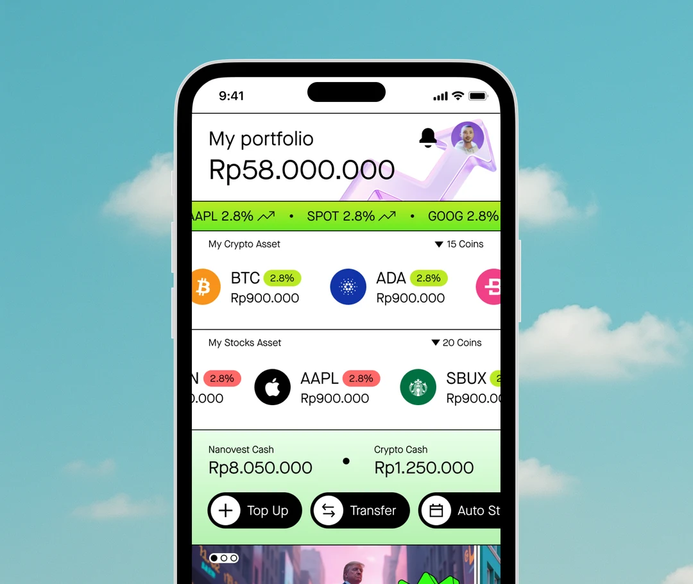
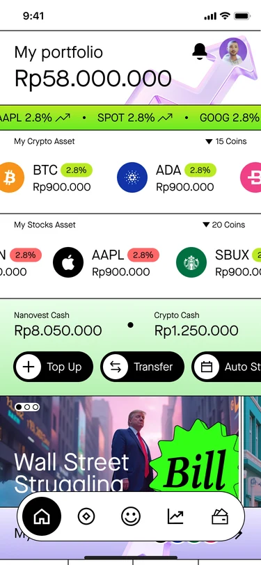
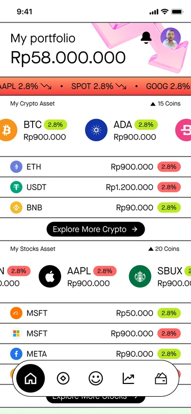
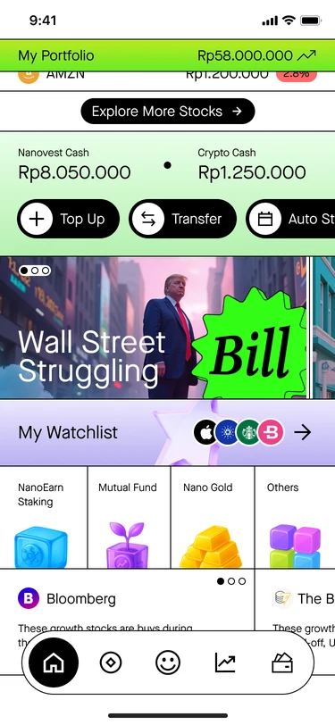
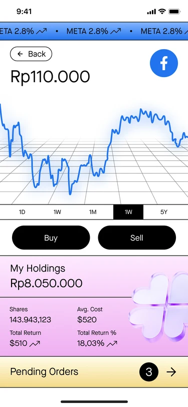

Investment App Reimagined
A portfolio screen that behaves like the trading floor it's named after: numbers always moving, a color for every mood, an arrow pointed at every price.
Visit nanovest.io- Client
- Sector
- Role
- Team
- Period
- Surface

Overview
Most investment apps calm the market down before it reaches the screen: a soft portfolio card, muted greens and reds, a ticker tucked into a corner nobody scrolls to. This concept asks the opposite question, what if the app kept the noise instead of hiding it, compressing an actual trading floor, its tickers, its arrows, its red and green fighting over the same headline, into one portrait screen.
Scope
- 01Concept direction
- 02Visual language exploration
- 03Portfolio dashboard
- 04Ticker & motion system
- 05Color-coded price states
- 06Stock detail & chart screen
- 07Iconography
- 08Prototyping
Problem
Every investment app plays it safe. The market it tracks never does.
A portfolio screen usually works hard to stay calm: one total, one soft color, a small arrow that barely tilts. That calm is good manners toward anyone who gets nervous watching a number fall, but it also erases the one feeling that made investing interesting to begin with, the pulse of a live market, numbers in motion, red and green arguing over the same letter.
The real trading floor never plays it that safe. Tickers scroll overhead in a blur, screens compete for the same square foot of attention, and a single stock can turn a room's mood in the time it takes a number to update. None of that survives the trip into a phone screen, where everything gets sanded down to one quiet card.
Approach
Compress the trading floor into one portrait screen.
The portfolio balance sits under a ticker banner that never stops scrolling, and the banner's whole background flips between green and red the instant the tracked stocks do, not a subtle tint, a full change of weather, with arrows pointing exactly where each price just went.
Crypto and stocks each get their own board: coin and company logos next to percentage pills that carry their own color, so a portfolio reads like a wall of tickers rather than a spreadsheet trying to be gentle about it. A stock's own detail screen keeps the same electricity, a single line chart spiking and diving across a trading grid, Buy and Sell sitting side by side like two decisions being made on the floor itself.
News and watchlists ride the same scroll as the balance, headlines styled like tabloid stickers fighting for a glance the way real financial news does, so checking a portfolio starts to feel like walking past a newsstand on the way onto the floor, not opening a quiet ledger.
Screens




Results
Deliverables